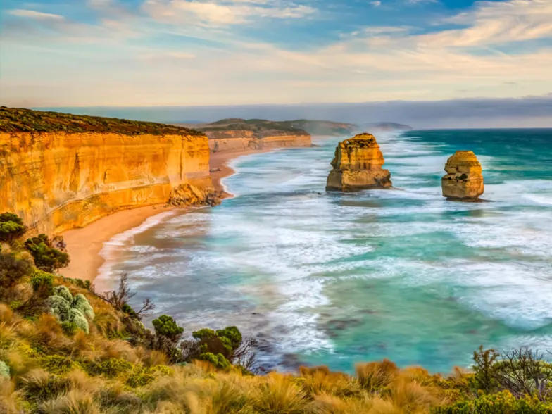
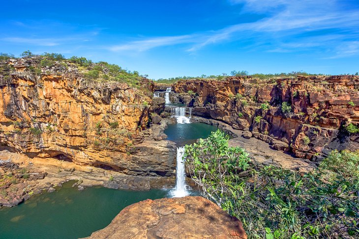
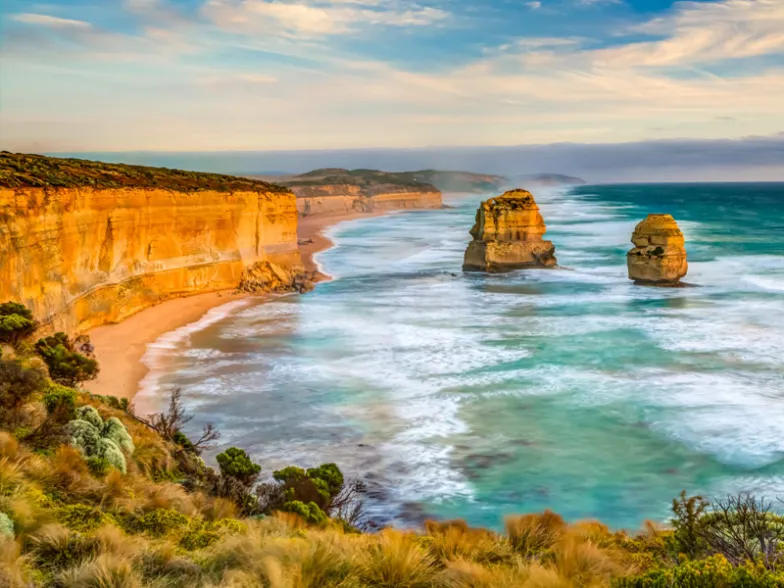
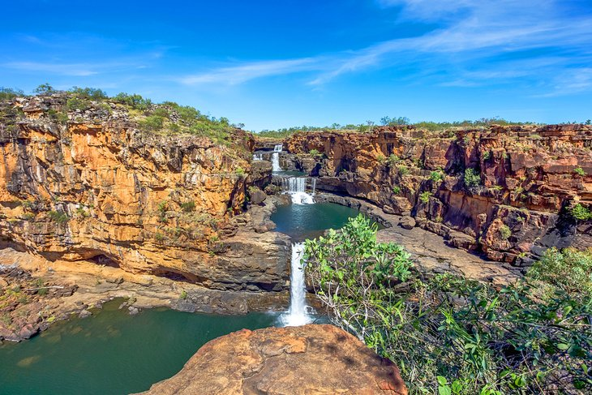

It’s impossible not to love Malta. There’s year-round sun, more beautiful beaches than your little heart could ever desire, a vibrant nightlife and lots of opportunities for sports and adventure. The Mediterranean nation enjoys a whopping eight-month long summer, so there’s never a bad time to experience the island’s rustic charms. Malta has too many gorgeous beaches to mention. Whether you take a dip in the inviting waters of St Peter’s Pool or party with your friends on the golden sand of Ghajn Tuffieha- Malta’s islands have the perfect beach for you. Malta consists of three main islands. Sandwiched in between the two main islands of Malta and Gozo, lies the tiny island of Comino. The Maltese might enjoy the relaxed, Mediterranean way of life during the day, but don’t make the mistake of thinking Malta has a sleepy nightlife. The earliest signs of human habitation and culture on Malta date back more than 7,000 years – way older than the Egyptian pyramids and the Great Wall of China. It’s no wonder then that its charming streets make the island feel like a picturesque open-air museum. If you stay with a Maltese family, you won’t be a guest- you’ll be part of the family. The Maltese are some of the most welcoming people on the planet. The Maltese take great pride in their delicious cuisine with scrumptious fish dishes featuring heavily.


India is an enormous country, filled with incredible people and an amazing diversity of traditions, cuisines and religions. Every traveller who visits India quickly falls in love with the friendly locals, the ancient spirituality and of course, the traditional Indian food! From the vibrant festivals to the warm hospitality and the art of bargaining. The deeply devotional nature of Indian culture can be found everywhere, from the beautiful temples to the locals quoting the Gita. Just one trip to the market and you’ll be amazed by the art of Indian bargaining. Nearly everything is negotiable in India, from vegetables to clothes to taxi rides – and it’s always done with a smile. Indians have a fierce sense of love and protection for their family. You’ll see dozens of family members over generations living under a single roof, from children to great-grandparents. You’ll also get a wonderful insight into India’s legendary hospitality and generosity. It can all be summed up with their motto, the Sanskrit phrase “Atithi Devo Bhava” meaning “Guest is equivalent to God”.
 



As well as the beautiful beaches, Australia is also home to snowy mountains, incredible national parks, rainforests and desert. The landscape truly differs from state to state, which is why this country is so fun to explore. Australia's spectacular natural environment, multicultural communities, excellent food and wine, its weather and lifestyle and the friendliness and openness of its people make it one of the world's most attractive tourist destinations. Since Australia is isolated from all other continents, the wildlife is abundant and unique. You can find the loudest and brightest birds, dog-like dingos, the cutest fuzzy Koalas, and, of course, spiders on spiders on spiders. There are so many beaches in Australia that if you visited a new one every single day, it would take you 27 years to see them all! Fairy Bread, Sausage Rolls, Meat Pies, Vegemite, Tim Tams, Pavlova, Lamingtons, Golden Gaytimes, Weet-Bix, Goon, and Sausage Sizzles. Even just the names of Aussie foods make you smile! Unlike the lack of creativity for naming its large statueS, Australia does a fantastic job at naming places. Many have indigenous origins, while others just go along with Australia’s tendency to have weird names. With names like Wollongong, Mount Surprise, Little Ugly Creek, Bong Bong, Magnetic Island, Nowhere Else etc. The best part about these tours was not only the beautiful places I had the privilege of experiencing, but the abundance of backpackers looking for friendly conversations. On tours in Australia, even people traveling with a friend or significant other are open and excited to meet new people.